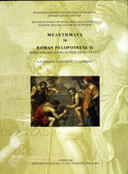

A.D. Rizakis, S. Zoumbaki, CL. Lepenioto and the collaboration of G. Steinhouer and A. Makres
Roman Peloponnese II: Roman Personal Names in their Social Context
Diffusion de Boccard: Athens, 2004
 |
The catalogue includes both Roman citizens and peregrini who employed Roman names, which they did either because of kinship ties through marriage or simply because it was the current fashion to use Roman names. The catalogue, therefore, does not contain the purely Greek names of peregrini that remained untouched by Roman onomastic practices. Such persons are, however, discussed in the comments on particular names, when it has seemed helpful to elucidate extended relationships, either of blood or by marriage. Likewise, individuals who are referred to in literary sources or in inscriptions from other regions are excluded from the catalogue, although reference to them may sometimes be made in the comments. Thus the present work is not to be viewed so much as a lexicon or even a complete prosopography, but rather as one whose main aim is to present a particular social class active at a particular time and place, namely the southern Peloponnese from the beginning of the Roman domination until Late Antiquity (Roman Peloponnese I, 40 n. 23). The majority of the inscriptions from Sparta dating to the Imperial period were found in the various systematic excavations carried out from the beginning of the twentieth century by the British School at Athens in the sanctuary of Artemis Orthia and in the area of the ancient theatre. |
| Back to Publications | Table of Contents |